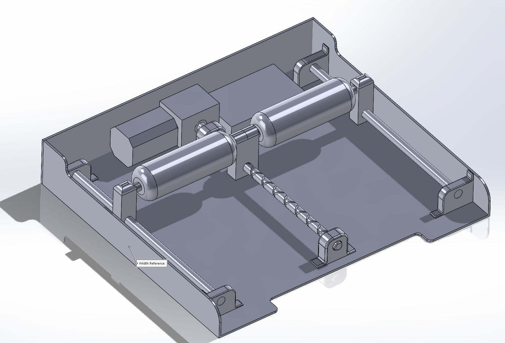
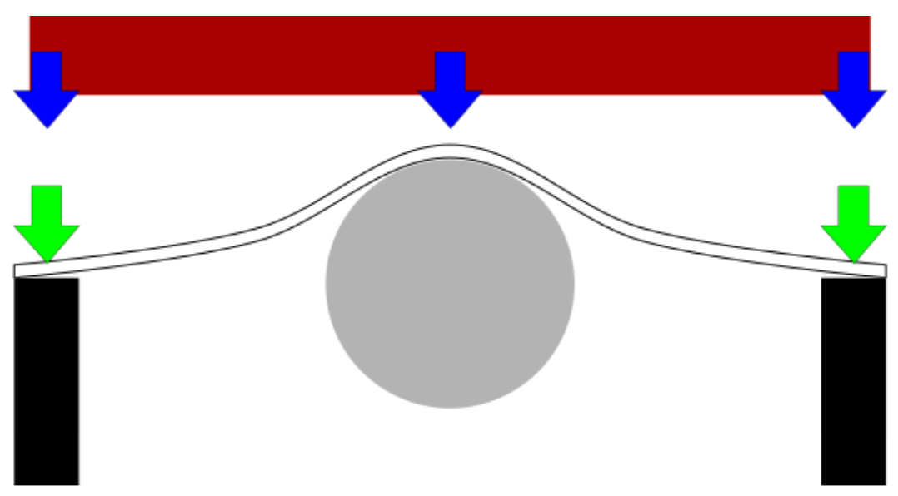

Our Initial concept for this project was built around an idea of using two mechanical
rollers on either side of a self-recipricating screw. However this design had many flaws
which were then addressed by later designs. The first of which is this design would place
the user's full weight on the screw and outer guide rails. Secondly, this design had no means
supporting the cushion above the roller leading to sagging and potentially safety concerns with
moving parts.
We realized that we could solve the two major issues of the initial design concept with one
solution.
By using a flexible sheet of lexan placed between the roller and the cushion we're able to fix
the
issue of the cushion not being supported outside of the roller while simultaneously distributing
the force of the roller to reduce peak pressure on the user. Similiarly, flexible lexan also
greatly reduces
the risk of pinching from the moving parts underneath.
